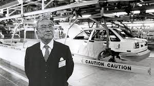

История Toyota
История автокомпании Toyota началась в 1933 году, как отдельного подразделения крупной
Toyoda Automatic Loom Works, занимавшейся выпуском ткацких станков. Сакичи Тойода, основатель
компании, был талантливым инженером и изобретателем. Он первым в Японии создал собственный
автоматический ткацкий станок и непрерывно совершенствовал свое творение. Его компания стала
успешной на японском рынке и знаменитой во всем мире.
В начале 30-х годов устройство станков Тойоды привлекло внимание крупнейшей в то время текстильной
мануфактуры мира — британской фирмы Platt Brother&Co. Сакичи согласился продать патентные права на
станок, а для оформления сделки в Великобританию отправился его сын Киичиро.
Стоит отметить, что автомобиль — одно из главных инженерных изобретений того времени — увлекал и
занимал ум Сакичи Тойода. Интерес к автомобилям перенял и его сын. Однако, побывав в Англии, он
буквально «заболел» идеей создания собственного автомобильного производства.
